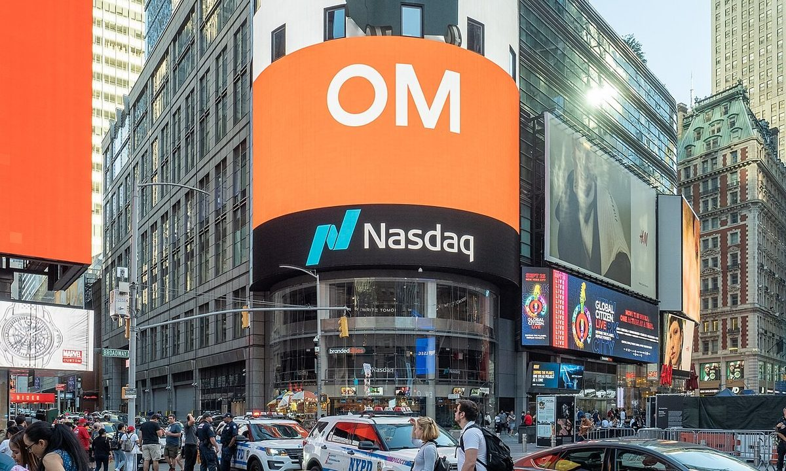

A record IPO trades up 17% on day one, and rivals send their congratulations with conditions
The Claude maker briefly touched a $2 trillion valuation before settling, and the people who compete with it and sell to it said what they hope it does next.
The first day market debut
Anthropic began trading under the ticker ANT a little after 11:30 a.m. EST on Thursday. The stock opened at $111.50, a 34% premium to the $83 price set on Wednesday, then gave back much of that gain through the afternoon and closed at $97.17, Yahoo Finance reported. Dario Amodei and Daniela Amodei rang the opening bell at the Nasdaq MarketSite in Times Square.
At the close, CNBC reported, Anthropic had a fully diluted market value of roughly $1.8 trillion, behind only Apple, Microsoft, Nvidia, Alphabet, Amazon and SpaceX among US companies. More than 846 million shares changed hands, compared with 522 million on SpaceX's opening day in June. The Associated Press noted the company passed $2 trillion in value at one point. The debut did not lift the wider market: the S&P 500 fell 2% for its sixth straight losing day, the Guardian reported. ANT was down about 6% in premarket trading on Friday.

Partners and rivals @LisaSu · CEO, AMD · @AravSrinivas · CEO, Perplexity · @aidangomez · CEO, Cohere
Lisa Su wrote at 2:09pm EST: "Congratulations @DarioAmodei, @DanielaAmodei, @NotTomBrown and the whole @AnthropicAI team on an incredible milestone! Proud to be your partner." Aravind Srinivas, whose company buys Anthropic's models, was effusive:
"Congratulations to @AnthropicAI on their historic IPO today! Anthropic has shown the world what a focused, high-conviction, taste-driven team can execute in a short time. Opus 5.5 remains the best model in the industry by a good margin, and we're delighted for them as their customer."
Aidan Gomez, who runs rival model maker Cohere, paired praise with a request. "A rising tide lifts all boats and a very successful IPO is good for everyone," he wrote. "I hope Anthropic adjusts its strategy to support a healthy community of competitors and a diversity of different ideologies and opinions." Clément Delangue of Hugging Face made a similar ask: "Hope this next chapter brings more open science and open-source AI. There are so many builders out there trying to build great things who could use your help and contributions to fight concentration of power, capabilities and wealth!" Delangue also cheered Ashton Kutcher, co-founder of the investment firm Sound Ventures, who wrote that backing Anthropic took "years of work, micro victories and failures stacked on top of one another. It's really the manifestation of trust."
Aaron Levie sympathized with the Amodeis at the bell: "This is the worst part about IPOing. They specifically make you stand there and clap in a prolonged way during the market open. Very unfortunate for aura."
Coding as the killer app @rauchg · CEO, Vercel
Guillermo Rauch read the result as a verdict on software work. In a post at 2:55pm EST he laid out his "is engineering a valuable pursuit" math: "An outcome-oriented, creative engineer is now a 1000x engineer. A tabs-vs-spaces-debating, miss-forest-for-trees engineer is now a -10x engineer. The regular knowledge worker is now a 2x engineer." He said the distribution of token use across Vercel's startup and enterprise customers backs this up, and concluded: "If there's a takeaway from Anthropic's success, it's that coding is the #1 killer app of AI." Earlier he had posted a shorter version of the same optimism: "Work backwards from science fiction. We can build anything now."


.jpg){kind=link}